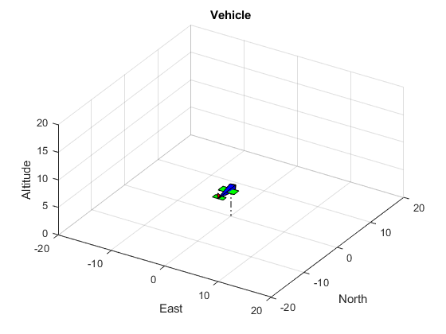
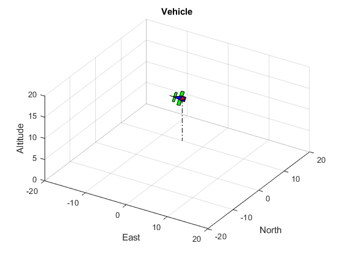

Contents
clear close all clc format long format compact
Vehicle Attitude
Implement the v2b.m function which calculates the DCM from the vehicle frame to the body frame. Then calculate the v2b DCM for a heading of 5 degrees, pitch of 10 degrees, and roll of 20 degrees.
heading = 5*pi/180;
pitch = 10*pi/180;
roll = 20*pi/180;
ypr = [heading, pitch, roll];
R_v2b = v2b(ypr);
disp('R_v2b');
disp(R_v2b);
R_v2b 0.981060262190407 0.085831651177431 -0.173648177666930 -0.022734435055296 0.941293088598988 0.336824088833465 0.192363997186601 -0.326496935685365 0.925416578398323
Vehicle Rendering
Populate the variables below such that the vehicle is placed at the origin with an altitude of 5 meters. Orient the vehicle such that is it level with the horizon and pointed North. You can set all translational and angular velocities to zero. Define this vehicle state to be at t = 0.
pn = 0; %North position pe = 0; %East position pd = -5; %Down position psi = 0; %Heading theta = 0; %Pitch phi = 0; %Roll u = 0; %Body-X translational velocity v = 0; %Body-Y translational velocity w = 0; %Body-Z translational velocity p = 0; %Body-X angular velocity q = 0; %Body-Y angular velocity r = 0; %Body-Z angular velocity t = 0; %Simulation time % % Define the input to the drawVehicle() function state = [pn, pe, pd, u, v, w, phi, theta, psi, p, q, r, t];
Draw the vehicle using the drawVehicle function
drawVehicle(state)
% Now define the vehicle state at t = 10 seconds. Place the vehicle at 10 % meters North, 5 meters West, and an altitude of 10 meters. Orient the % vehicle such that it is pointed 30 degrees Northeast, the nose is up 20 % degrees from the horizon, and the left wing is tipped down 60 degrees. % You can again set all translational and angular velocities to zero.
pn = 10; %North position pe = -5; %East position pd = -10; %Down position psi = 120*pi/180; %Heading theta = 20*pi/180; %Pitch phi = 60*pi/180; %Roll u = 0; %Body-X translational velocity v = 0; %Body-Y translational velocity w = 0; %Body-Z translational velocity p = 0; %Body-X angular velocity q = 0; %Body-Y angular velocity r = 0; %Body-Z angular velocity t = 0; %Simulation time % %% % % Define the input to the drawVehicle() function state = [pn, pe, pd, u, v, w, phi, theta, psi, p, q, r, t];% %% % % Draw the vehicle using the drawVehicle function drawVehicle(state) % %% The Stability Frame % % Implement the b2s.m function which calculates the DCM from the body frame % % to the stability frame. Then calculate the b2s DCM for an angle of % % attack of 25 degrees. alpha = 25*pi/180; R_b2s = b2s(alpha); disp('R_b2s'); disp(R_b2s); % %% The Wind Frame % % Implement the s2w.m function which calculates the DCM from the stability % % frame to the wind frame. Then calculate the s2w DCM for side-slip angle % % of 5 degrees. beta = 5*pi/180; R_s2w = s2w(beta); disp('R_s2w'); disp(R_s2w); % %% Computing the body to wind frame DCM % % Implement the b2w.m function which calculates the DCM from the body fame % % to the wind frame. Then calculat the b2w DCM for an angle of attack of 3 % % degrees and side slip of -4 degrees. alpha = 3*pi/180; beta = -4*pi/180; R_b2w = b2w(alpha, beta); disp('R_b2w'); disp(R_b2w);
R_b2s
0.906307787036650 0 0.422618261740699
0 1.000000000000000 0
-0.422618261740699 0 0.906307787036650
R_s2w
0.996194698091746 0.087155742747658 0
-0.087155742747658 0.996194698091746 0
0 0 1.000000000000000
R_b2w
0.996196923398857 -0.069756473744125 0.052208468483932
0.069660874921215 0.997564050259824 0.003650771757535
-0.052335956242944 0 0.998629534754574
